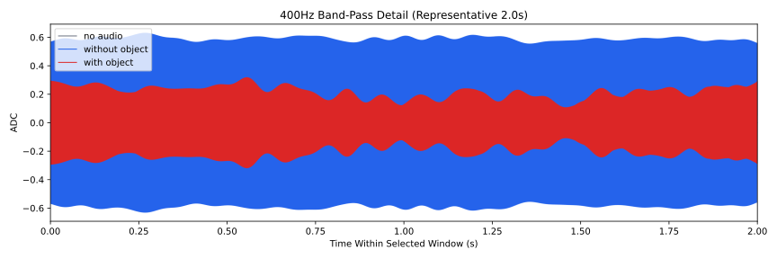
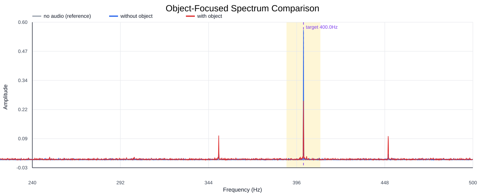
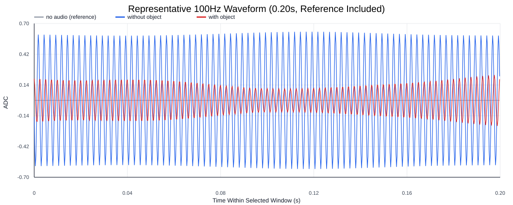
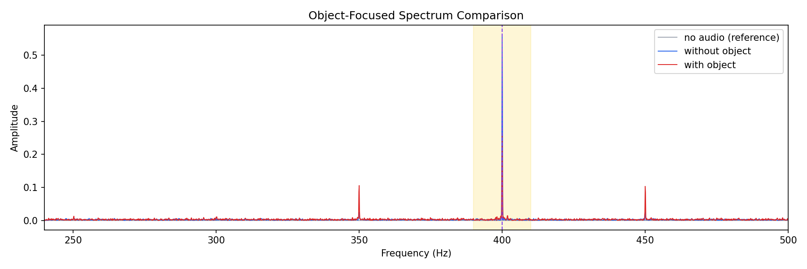
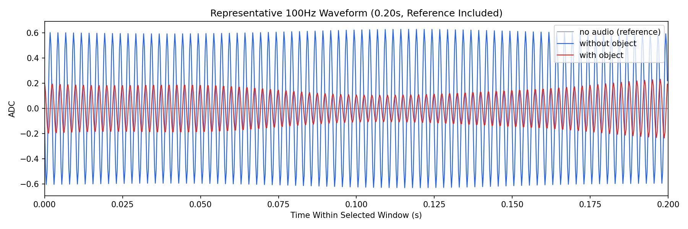

Background: F:\项目类文件夹\异物检测4.10\Data_Dual\frequency_sweep\0400Hz\repeat_04\raw\no_audio.csv
Without object: F:\项目类文件夹\异物检测4.10\Data_Dual\frequency_sweep\0400Hz\repeat_04\raw\without_object.csv
With object: F:\项目类文件夹\异物检测4.10\Data_Dual\frequency_sweep\0400Hz\repeat_04\raw\with_object.csv
| Metric | 无音频 | 100Hz无异物 | 100Hz有异物 | 无异物/无音频 | 有异物/无异物 | 有异物/无音频 |
|---|---|---|---|---|---|---|
| centered_rms | 0.012984 | 0.489633 | 0.378127 | 37.7092 | 0.7723 | 29.1215 |
| raw_target_amp | 0.000089 | 0.562729 | 0.255809 | 6310.5967 | 0.4546 | 2868.7078 |
| filtered_rms | 0.001346 | 0.408561 | 0.186281 | 303.5291 | 0.4559 | 138.3925 |
| filtered_target_amp | 0.000089 | 0.562729 | 0.255809 | 6310.5967 | 0.4546 | 2868.7078 |
| filtered_energy_ratio | 0.010746 | 0.696260 | 0.242696 | 64.7898 | 0.3486 | 22.5839 |
| window_filtered_target_amp_mean | 0.000411 | 0.577402 | 0.258394 | 1404.5628 | 0.4475 | 628.5580 |
| window_filtered_target_amp_std | 0.001626 | 0.016460 | 0.047438 | 10.1251 | 2.8820 | 29.1808 |




